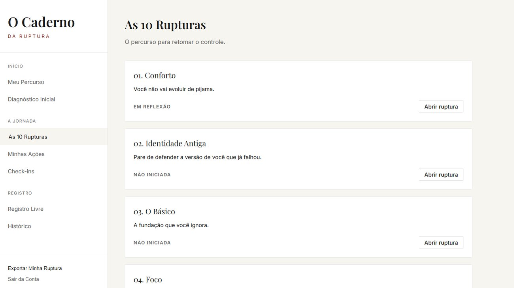
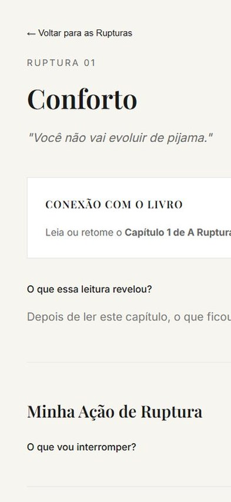
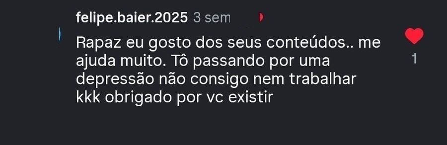

Não é preguiça. Não é falta de força de vontade. É que ninguém te ensinou a romper com os padrões que te mantêm no automático. A Ruptura faz exatamente isso.
Acesso imediato e vitalício · Garantia de 7 dias
Você se reconhece aqui?
"Amanhã eu começo." Você já falou isso tantas vezes que nem acredita mais na própria palavra.
Que viram 2 horas. E aquele peso no peito depois — que você aprendeu a fingir que não sente.
O projeto, o treino, a rotina. Três semanas depois, você nem lembra por que começou.
Você evita tentar na frente dos outros. No fundo, o medo não é de falhar — é do que vão pensar.
A tela, a nicotina, o resto que só você sabe. Cada uma cobra um preço que você finge não pagar.
Às vezes parece que você está assistindo a sua vida — e não vivendo ela.
Isso não é fraqueza. É um padrão. E padrão se rompe.
Por que você continua igual
Você já viu os vídeos. Salvou as frases. Sentiu o sangue ferver e pensou: "agora vai".
Três dias depois, voltou pro mesmo lugar.
E cada vez que isso acontece fica uma marca. Não é só mais um projeto parado — é mais uma prova que a sua cabeça vai usar no julgamento seguinte. Hoje, quando você promete alguma coisa, uma parte de você já responde: "tá falando agora; vamos ver quanto tempo dura."
Você ainda convence os outros. Já não convence a si mesmo.
Esse é o lugar mais estranho pra se viver: você ainda sonha, ainda fala, ainda imagina uma vida maior — mas o seu comportamento começou a votar contra tudo isso. Quem olhar só pro que você faz, e não pro que você diz que quer, chega a uma conclusão bem diferente sobre você.
E não é falta de força. É que o conforto nunca chega com uma placa escrita "desista". Ele chega assim:
Toda frase dessas é razoável. Algumas são até verdade em certos dias. O problema nunca é uma delas sozinha — é quem passou a decidir todos os dias.
E repara: você nem está confortável. Sente culpa, ansiedade, aquele desprezo por si mesmo. Mas é conhecido. A mente prefere uma dor familiar a uma exposição nova.
A Ruptura é o nome desse instante em que você percebe o padrão antes de obedecer a ele.
Às vezes ela é enorme: sair de um ambiente, encerrar um ciclo. Na maioria das vezes começa pequena. Levantar quando o alarme toca. Gravar mesmo se sentindo estranho. Fazer aquela tarefa que você vem empurrando há uma semana.
Uma ação isolada não transforma ninguém. Mas ela quebra a certeza de que você sempre vai fazer a mesma coisa. Repetida, ela vira evidência. E identidade, na prática, é muito menos o que você declara — e muito mais o conjunto de evidências que você aceita construir.
É isso que A Ruptura treina.
O método
Não é desafio, agenda de hábitos nem frases motivacionais. É uma leitura de confronto + um sistema de prática, em três peças que trabalham juntas:
10 rupturas, 3 partes. Cada capítulo abre com a história real de um atleta — Goggins, Kobe, Senna — e termina com as perguntas que fazem o capítulo ser sobre você. Direto, sem enrolação.
Dez aulas em vídeo, uma pra cada ruptura, aprofundando o que o capítulo levantou. Nas redes eu tenho um minuto pra falar de um assunto desses. Aqui eu tenho o tempo que ele realmente pede.
Eu já usei conteúdo sobre disciplina pra evitar exatamente o que eu precisava fazer: assistia, sentia que tava aprendendo, ganhava a sensação de movimento. Só que nada se movia. Por isso existe o caderno — é onde o capítulo para de ser sobre o Goggins e passa a apontar pra uma decisão sua.
Ler. Escrever. Agir.
Na prática
Livro digital
Um treinamento de mentalidade
para sair do automático
"Ler para entender.
Escrever para se enxergar.
Agir para romper."


O Caderno da Ruptura — no computador ou no celular
Por dentro do livro
Perceber o automático e questionar a identidade que sustenta sua vida atual.
Confrontar sua atenção, suas fugas e seus excessos.
Reorganizar o ambiente, fortalecer os pilares e assumir a dedicação como modo de vida.
Você confundiu alívio com felicidade. O desconforto certo é o caminho de volta.
Pare de perguntar "o que preciso fazer?" e comece a perguntar "quem preciso me tornar?"
Enquanto você procura o método perfeito, quem vence repete o simples.
Foco não é fazer tudo com intensidade. É proteger o que você decidiu que importa.
Sua origem não é seu destino. E o que faltou não é desculpa pro que ainda dá pra construir.
Adicionar mais virou sua forma de fugir do essencial. Menos ruído, mais direção.
Procrastinação raramente é preguiça. É fuga. E fuga se encara.
Você não controla tudo. Mas controla sua preparação, sua exposição e sua resposta.
Nenhuma mudança se sustenta sobre uma vida desequilibrada.
A melhor versão não é um lugar onde se chega. É construída nas decisões de todos os dias.
Pra quem é
Quem acompanha

Comentários reais recebidos nas redes do Hebber.
Oferta
De R$181 por apenas
R$36
à vista no Pix — ou em até 6× de R$6,73 no cartão.
Pagamento único. Sem mensalidade. Acesso vitalício.
Acesso na área de membros · Pagamento seguro via Greenn · Pix, cartão ou boleto
Entra, lê, assiste e usa o caderno. Se em 7 dias você sentir que não é pra você, responde o e-mail da Greenn pedindo reembolso — o valor volta integral, pelo mesmo meio de pagamento. Sem perguntas e sem ressentimento.
Dúvidas
Assim que o pagamento é confirmado, você recebe um e-mail com o acesso à área de membros. Está tudo lá dentro, no mesmo login: o livro, as aulas e o Caderno da Ruptura. Sem liberação por semana.
Nenhum livro e nenhum vídeo transformam ninguém magicamente — quem promete isso está mentindo. E deixa eu ser honesto sobre o que "mentalidade" significa aqui: ela não apaga a realidade. Não apaga o dinheiro que falta, o ambiente que pesa, o preconceito, o cansaço. A realidade existe e muitas vezes ela é injusta. Mentalidade é a relação que você constrói com o que já existe — é a resposta que você treina e a decisão que ainda cabe na margem que você tem. Às vezes essa margem é enorme, às vezes é pequena. Mas enquanto existir escolha, existe coisa que dá pra construir. É nisso que A Ruptura mexe, e é por isso que o caderno existe: pra virar prática.
Porque cada capítulo abre com uma história que te puxa pra dentro e termina com perguntas sobre a sua vida — não sobre a do autor. Você não lê A Ruptura. Você se lê nela.
É um livro digital com aulas em vídeo e um caderno de exercícios. Não é desafio de X dias, não tem turma, não tem aula ao vivo e não tem prazo pra terminar. Você lê, assiste e escreve no seu ritmo.
Acesso vitalício. Você paga uma vez e o material continua seu — sem mensalidade e sem renovação.
Não. A ordem das rupturas faz sentido de ponta a ponta, mas quem define o ritmo é você. Uma ruptura por semana já é um bom passo — e vale mais do que ler tudo em dois dias e não praticar nada.
Não. O Caderno da Ruptura é um ambiente digital: você escreve direto nele, pelo celular ou pelo computador, e tudo fica salvo no seu histórico. Lá dentro o livro também abre em flipbook, com as páginas virando como num livro de verdade.
Sim. Livro, aulas e caderno funcionam no celular, no tablet e no computador.
Pix, cartão ou boleto, com pagamento processado pela Greenn. À vista sai R$36 no Pix, ou você divide em até 6× de R$6,73 no cartão.
Você tem 7 dias corridos a partir da compra. Se não for pra você, é só responder o e-mail de confirmação da Greenn pedindo o reembolso — o valor volta pelo mesmo meio de pagamento. Sem perguntas e sem burocracia.
Tem. Qualquer problema de acesso ou dúvida sobre o material, é só responder o e-mail que você recebe depois da compra que eu te respondo.
Nas primeiras páginas: "esse cara descreveu exatamente o lugar em que eu estou."
Em algum capítulo: "talvez eu não seja incapaz. Talvez eu esteja obedecendo a uma versão de mim que nunca questionei."
No final: "eu não preciso mudar tudo hoje. Mas preciso parar de fugir da próxima decisão."
Você quer uma transformação grande o suficiente pra contar pros outros. O que a sua vida está pedindo é uma decisão pequena o suficiente pra você repetir amanhã.
Não promete que nunca mais vai fugir. Prova que dessa vez você percebeu a fuga antes de entregar a decisão.
Você não precisa resolver a vida inteira hoje. Mas pode parar de fugir da próxima decisão.
Quero começar agoraR$36 à vista · Acesso imediato e vitalício · Garantia de 7 dias